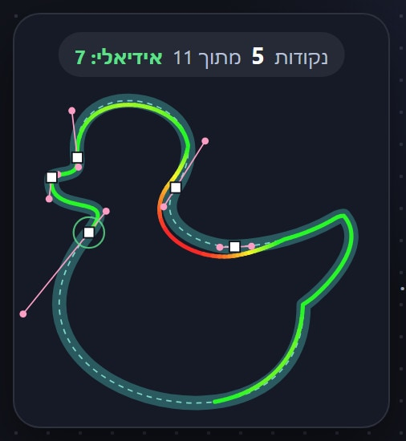

מדריך
תשעה שלבים קצרים שמלמדים צעד אחר צעד: קווים ישרים, עקומות, ידיות ופינות חדות.
משחק · חינם · בדפדפן
כלי העט הוא הכלי שהכי קשה להתרגל אליו. כאן מתרגלים אותו כמו משחק: משחזרים צורה בעזרת נקודות וידיות, בדיוק כמו באילוסטרייטור, ומקבלים ציון.

תשעה שלבים קצרים שמלמדים צעד אחר צעד: קווים ישרים, עקומות, ידיות ופינות חדות.
משחזרים כל צורה עם כמה שפחות נקודות. כל נקודה שלא השתמשתם בה נכנסת לניקוד.
מספר הנקודות מוגבל, והניקוד לפי כמה הציור מדויק. הקו משנה צבע מירוק לאדום כשיוצאים מהצורה.
עיצובים מהכיתה, רק ברמה הקשה. היעד: לצייר אותם באותו מספר נקודות שבו אני ציירתי.